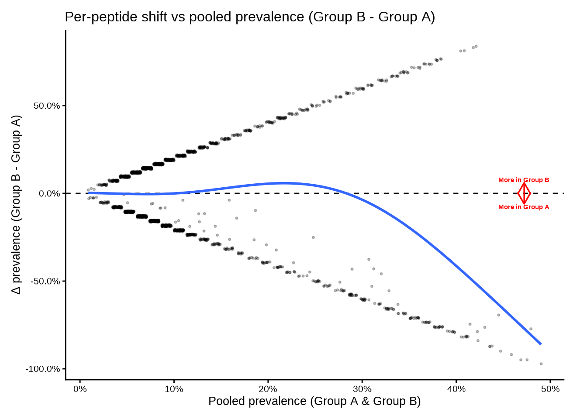
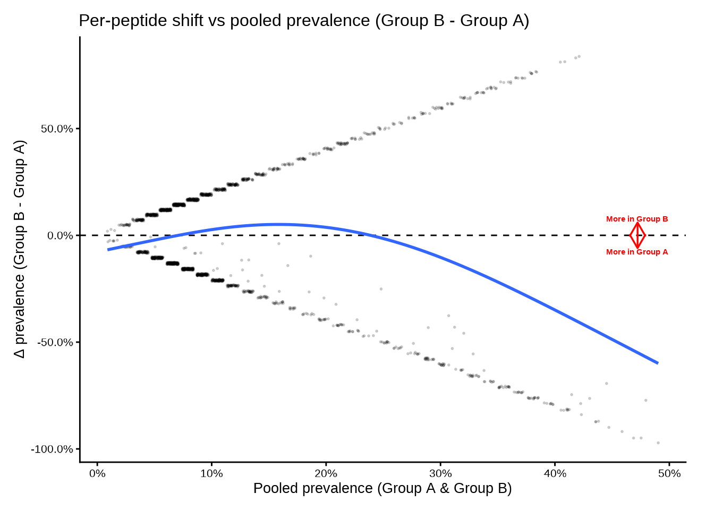
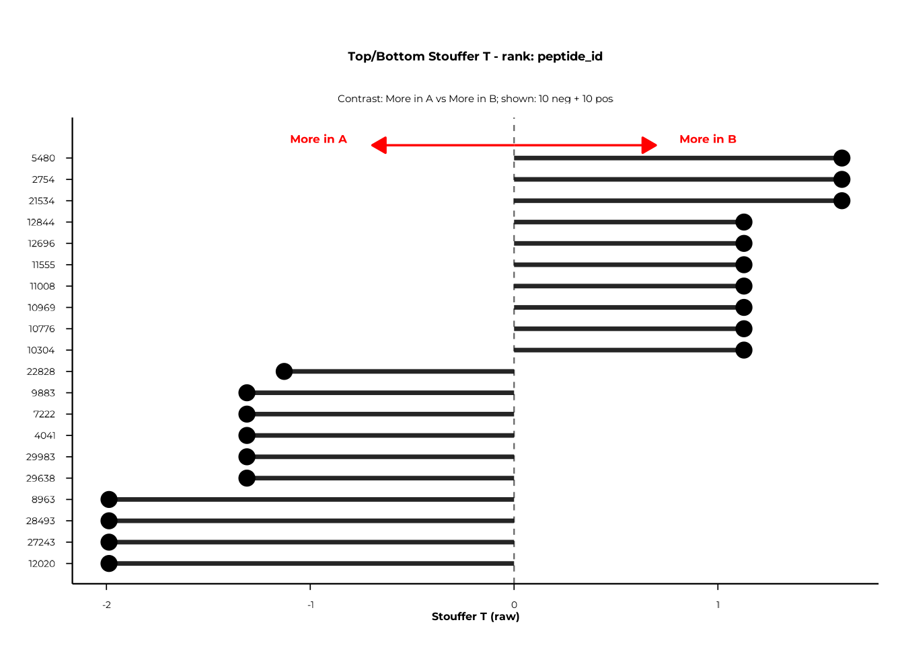
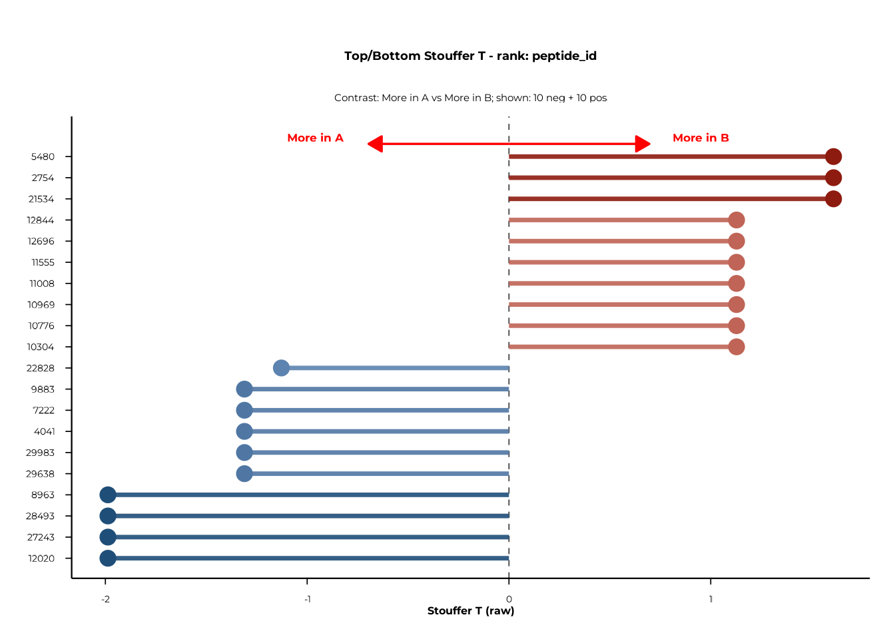

Overview
The Delta framework answers two related but distinct questions about peptide-level prevalence:
-
Where do peptides shift? —
deltaplot()anddeltaplot_interactive()place each peptide at its pooled prevalence (x) and prevalence shift Δ (y), providing a global view of which features move between groups. -
Is there a statistically significant global shift?
—
compute_delta()aggregates per-peptide z-scores into a single Stouffer-type statistic and assesses significance via subject-label permutation.forestplot()andforestplot_interactive()then display the top and bottom features ranked by that statistic.
This vignette walks through the complete Delta workflow in phiper:
- Visualising raw prevalence shift with
deltaplot()anddeltaplot_interactive() - Running the permutation test with
compute_delta() - Displaying results with
forestplot()andforestplot_interactive()
Setup
Load the bundled example dataset. It contains two patient groups
(A, B) measured at two timepoints
(T1, T2) across 1 000 simulated peptides.
pd <- load_example_data()
#> [09:26:47] INFO Constructing <phip_data> object
#> -> create_data()
#> [09:26:47] INFO Fetching peptide metadata library via get_peptide_library()
#> [09:26:47] INFO Retrieving peptide metadata into DuckDB cache
#> -> get_peptide_library(force_refresh = FALSE)
#> [09:26:47] INFO Opened DuckDB connection
#> - cache dir:
#> /home/runner/.cache/R/phiperio/peptide_meta/phip_cache.duckdb
#> - table: peptide_meta
#> [09:26:47] OK Using cached download (SHA-256 match)
#> [09:26:50] OK Download complete and loaded into R
#> [09:26:55] INFO Importing sanitized metadata into DuckDB cache...
#> [09:26:57] OK peptide_meta table created in DuckDB cache
#> [09:26:57] OK Retrieving peptide metadata into DuckDB cache - done
#> -> elapsed: 9.97s
#> [09:26:57] OK Peptide metadata acquired
#> [09:26:57] INFO Validating <phip_data>
#> -> validate_phip_data()
#> [09:26:57] INFO Checking structural requirements (shape & mandatory columns)
#> [09:26:57] INFO Checking outcome family availability (exist / fold_change /
#> raw_counts)
#> [09:26:57] INFO Checking collisions with reserved names
#> - subject_id, sample_id, timepoint, peptide_id, exist,
#> fold_change, counts_input, counts_hit
#> [09:26:57] INFO Ensuring all columns are atomic (no list-cols)
#> [09:26:57] INFO Checking key uniqueness
#> [09:26:57] INFO Validating value ranges & types for outcomes
#> [09:26:57] INFO Assessing sparsity (NA/zero prevalence vs threshold)
#> - warn threshold: 50%
#> [09:26:57] INFO Checking peptide_id coverage against peptide_library
#> [09:26:57] INFO Checking full grid completeness (peptide * sample)
#> [09:26:57] OK Validating <phip_data> - done
#> -> elapsed: 0.7s
#> [09:26:57] OK Constructing <phip_data> object - done
#> -> elapsed: 10.674s
pd
#> ── <phip_data> ─────────────────────────────────────────────────────────────────
#>
#> counts (first 5 rows):
#> # A tibble: 5 × 9
#> sample_id subject_id group timepoint peptide_id exist counts_control
#> <chr> <chr> <chr> <chr> <chr> <int> <int>
#> 1 A_T1_1 1 A T1 10003 1 5
#> 2 A_T1_1 1 A T1 10017 1 37
#> 3 A_T1_1 1 A T1 10023 1 11
#> 4 A_T1_1 1 A T1 10062 1 0
#> 5 B_T1_1 1 B T1 10087 1 1
#> # ℹ 2 more variables: counts_hits <int>, fold_change <dbl>
#>
#> table size: 78,200 rows x 9 columns
#>
#> peptide library preview (first 5 rows):
#> # A tibble: 5 × 8
#> peptide_id Fullname species genus family order class common
#> <chr> <chr> <chr> <chr> <chr> <chr> <chr> <chr>
#> 1 agilent_1 Chromodomain-helicase-DNA-… Homo s… Homo Homin… Prim… Mamm… Human
#> 2 agilent_2 integral membrane protein Mycoba… Myco… Mycob… Myco… Acti… NA
#> 3 agilent_3 hypothetical protein (6/16… Mycoba… Myco… Mycob… Myco… Acti… NA
#> 4 agilent_4 envelope protein (5/8) & a… Orthof… Orth… Flavi… Amar… Flas… JEV
#> 5 agilent_5 Myosin-7 & beta-myosin hea… Homo s… Homo Homin… Prim… Mamm… Human
#> ... plus 36 more columns
#>
#> library size: 357,190 rows x 44 columns
#>
#> meta flags:
#> con: <duckdb_connection>
#> longitudinal: TRUE
#> exist: TRUE
#> fold_change: TRUE
#> raw_counts: FALSE
#> extra_cols: group, counts_control, counts_hits
#> peptide_con: <duckdb_connection>
#> materialise_table: TRUE
#> finalizer_env: <environment>
#> full_cross: FALSENote. The example data are entirely simulated and have no biological meaning. They exist solely to demonstrate the API.
The Delta plots consume prevalence tables produced by
compute_pop() (see the POP vignette for details). Compute a
group-level prevalence table first:
pop_group <- compute_pop(
pd,
rank_cols = "peptide_id",
group_cols = "group"
)
#> [09:26:58] INFO compute_pop
#> [09:26:58] INFO compute_pop
#> - ranks : peptide_id
#> - group_cols: group
#> - exist_col : exist
#> - pop_k_min : 1
#> - paired : FALSE
#> [09:26:58] INFO ranks resolved
#> - available: peptide_id
#> [09:26:58] INFO computing cohort sizes and validating binary group_cols
#> [09:26:58] INFO computing presence per sample via k-of-n rule
#> [09:26:58] INFO counting present samples per feature (pop, unpaired)
#> [09:26:58] INFO building pairwise comparisons
#> [09:27:00] OK materialized; computing Fisher p-values
#> - table: ph_pop_20260519_092658
#> [09:27:01] OK done (compute_pop, unpaired)
#> - rows : 1950
#> - ranks : peptide_id
#> - k_min : 1
#> [09:27:01] OK compute_pop - done
#> -> elapsed: 3.318s
head(pop_group)
#> rank feature group_col group1 n1 N1 prop1 percent1 group2 n2 N2
#> 1 peptide_id 10003 group A 31 38 0.8157895 81.57895 B 0 42
#> 2 peptide_id 10017 group A 6 38 0.1578947 15.78947 B 0 42
#> 3 peptide_id 10023 group A 29 38 0.7631579 76.31579 B 0 42
#> 4 peptide_id 10062 group A 11 38 0.2894737 28.94737 B 0 42
#> 5 peptide_id 10087 group A 0 38 0.0000000 0.00000 B 8 42
#> 6 peptide_id 10100 group A 0 38 0.0000000 0.00000 B 10 42
#> prop2 percent2 ratio delta_ratio p_raw n_peptides
#> 1 0.0000000 0.00000 68.52631579 33.263158 8.819969e-16 1
#> 2 0.0000000 0.00000 13.26315789 5.631579 9.186952e-03 1
#> 3 0.0000000 0.00000 64.10526316 31.052632 3.123739e-14 1
#> 4 0.0000000 0.00000 24.31578947 11.157895 1.148463e-04 1
#> 5 0.1904762 19.04762 0.06907895 -6.238095 5.758809e-03 1
#> 6 0.2380952 23.80952 0.05526316 -8.047619 1.180799e-03 1For the unpaired group comparison with compute_delta(),
each subject must appear at most once per group. Because pd
contains two timepoints per subject, restrict to a single timepoint
first:
Visualising prevalence shift
deltaplot() — static ggplot2
deltaplot() plots each peptide at:
-
x-axis — pooled prevalence
(prop1 + prop2) / 2 -
y-axis — prevalence shift
prop2 − prop1
A dashed horizontal line marks Δ = 0. Arrows and labels indicate the
direction of enrichment. A GAM smooth (controlled by
add_smooth) summarises the trend across pooled
prevalence.
The only required input is a data frame containing
group1, group2, prop1, and
prop2 — which is exactly what compute_pop()
returns.
deltaplot(
pop_group,
group_pair_values = c("A", "B"),
group_labels = c("Group A", "Group B")
)
#> [09:27:01] INFO Preparing delta prevalence plot.
Use group_pair_values to select a specific contrast when
the table contains more than one pair. group_labels
provides display names for the axis annotations.
Adjusting the smooth
The smooth uses a GAM with basis dimension smooth_k.
Lower values produce smoother curves; set
add_smooth = FALSE to suppress it.
deltaplot(
pop_group,
group_pair_values = c("A", "B"),
group_labels = c("Group A", "Group B"),
smooth_k = 3,
point_alpha = 0.15,
point_size = 0.4
)
#> [09:27:03] INFO Preparing delta prevalence plot.
deltaplot_interactive() — plotly
The interactive version mirrors the static API. Hovering over a point shows the feature identifier, group-level counts and percentages, and p-value.
deltaplot_interactive(
pop_group,
group_pair_values = c("A", "B"),
group_labels = c("Group A", "Group B")
)Disable the smooth if you have few peptides or want a cleaner display:
deltaplot_interactive(
pop_group,
group_pair_values = c("A", "B"),
group_labels = c("Group A", "Group B"),
add_smooth = FALSE,
point_size = 5,
point_alpha = 0.5
)Testing global shift: compute_delta()
compute_delta() performs a permutation test for a global
(antigen-wide) shift in prevalence between two groups. For each
(rank, feature) stratum it computes a per-peptide z-score,
aggregates them via a Stouffer statistic, and assesses significance by
permuting subject labels.
Unpaired design — group comparison
set.seed(42)
delta_group <- compute_delta(
pd_t1,
rank_cols = "peptide_id",
group_cols = "group",
B_permutations = 2000L
)
delta_group
#> # A tibble: 1,950 × 19
#> rank feature group_col group1 group2 design n_subjects_paired
#> <chr> <chr> <chr> <chr> <chr> <chr> <int>
#> 1 peptide_id 10003 group A B unpaired NA
#> 2 peptide_id 10017 group A B unpaired NA
#> 3 peptide_id 10023 group A B unpaired NA
#> 4 peptide_id 10062 group A B unpaired NA
#> 5 peptide_id 10087 group A B unpaired NA
#> 6 peptide_id 10100 group A B unpaired NA
#> 7 peptide_id 10108 group A B unpaired NA
#> 8 peptide_id 1011 group A B unpaired NA
#> 9 peptide_id 10121 group A B unpaired NA
#> 10 peptide_id 1013 group A B unpaired NA
#> # ℹ 1,940 more rows
#> # ℹ 12 more variables: n_peptides_used <int>, m_eff <dbl>, T_obs <dbl>,
#> # T_null_mean <dbl>, T_null_sd <dbl>, T_obs_stand <dbl>, Z_from_p <dbl>,
#> # p_perm <dbl>, b <int>, max_delta <dbl>, frac_delta_pos <dbl>,
#> # frac_delta_pos_w <dbl>What’s in the output?
| Column | Description |
|---|---|
rank |
Rank at which the feature is defined |
feature |
Feature identifier |
group_col |
Name of the grouping column |
group1, group2
|
The two groups compared |
design |
"paired" or "unpaired"
|
n_subjects_paired |
Paired subjects used (or NA for unpaired) |
n_peptides_used |
Peptides contributing to the test |
m_eff |
Effective number of peptides after weighting |
T_obs |
Observed Stouffer-type test statistic |
p_perm |
Two-sided permutation p-value |
b |
Number of permutations actually used |
max_delta |
Maximum absolute peptide-level prevalence difference |
frac_delta_pos |
Unweighted fraction of positive peptide-level deltas |
frac_delta_pos_w |
Weighted fraction of positive peptide-level deltas |
Choosing the per-peptide statistic
stat_mode controls how each peptide’s z-score is
computed:
stat_mode |
Description |
|---|---|
"srlr" (default) |
Signed root likelihood ratio |
"diff" |
Wald-type z: Δ / SE |
"asin" |
Arcsine-transformed z (variance-stabilised) |
"score" |
Pooled score z (2×2 score test) |
"mcnemar" |
Signed McNemar z — paired designs only |
"srlr_paired" |
Signed root deviance — paired designs only |
# Arcsine-transformed statistic
delta_asin <- compute_delta(
pd,
rank_cols = "peptide_id",
group_cols = "group",
stat_mode = "asin",
B_permutations = 2000L
)Aggregation and stratification
aggregate_stat controls how peptide-level z-scores are
combined:
-
"stouffer"(default) — weighted Stouffer combination -
"maxmean"— mean of the dominant direction -
"af"— absolute fraction
strat_bins bins peptides by pooled prevalence before
aggregation. The default bins c(0.002, 0.005, ..., 0.50)
stratify across the prevalence range so that low- and high-prevalence
peptides are treated separately. Set strat_bins = 0 for a
single global statistic without stratification.
# No stratification
delta_nostrat <- compute_delta(
pd,
rank_cols = "peptide_id",
group_cols = "group",
strat_bins = 0,
B_permutations = 2000L
)
# Custom bins
delta_custom <- compute_delta(
pd,
rank_cols = "peptide_id",
group_cols = "group",
strat_bins = c(0.05, 0.25, 0.50),
B_permutations = 2000L
)Weighting
weight_mode controls peptide weights in the Stouffer
statistic:
-
"equal"(default) — all peptides weight 1 -
"se_invvar"— inverse-SE weights (downweights noisy peptides) -
"n_eff_sqrt"— square root of expected positives (emphasises common peptides)
delta_invvar <- compute_delta(
pd,
rank_cols = "peptide_id",
group_cols = "group",
weight_mode = "se_invvar",
B_permutations = 2000L
)Paired design — timepoint comparison
When the same subjects are measured at two timepoints, set
paired_by to the subject-linking column and
stat_mode to a paired statistic. The function then performs
sign-flipping permutations instead of label shuffling.
set.seed(42)
delta_paired <- compute_delta(
pd,
rank_cols = "peptide_id",
group_cols = "timepoint",
paired_by = "subject_id",
stat_mode = "srlr_paired",
B_permutations = 2000L
)
delta_paired
#> # A tibble: 1,946 × 19
#> rank feature group_col group1 group2 design n_subjects_paired
#> <chr> <chr> <chr> <chr> <chr> <chr> <int>
#> 1 peptide_id 10003 timepoint T1 T2 paired 21
#> 2 peptide_id 10017 timepoint T1 T2 paired 21
#> 3 peptide_id 10023 timepoint T1 T2 paired 21
#> 4 peptide_id 10062 timepoint T1 T2 paired 21
#> 5 peptide_id 10087 timepoint T1 T2 paired 21
#> 6 peptide_id 10100 timepoint T1 T2 paired 21
#> 7 peptide_id 10108 timepoint T1 T2 paired 21
#> 8 peptide_id 1011 timepoint T1 T2 paired 21
#> 9 peptide_id 10121 timepoint T1 T2 paired 21
#> 10 peptide_id 1013 timepoint T1 T2 paired 21
#> # ℹ 1,936 more rows
#> # ℹ 12 more variables: n_peptides_used <int>, m_eff <dbl>, T_obs <dbl>,
#> # T_null_mean <dbl>, T_null_sd <dbl>, T_obs_stand <dbl>, Z_from_p <dbl>,
#> # p_perm <dbl>, b <int>, max_delta <dbl>, frac_delta_pos <dbl>,
#> # frac_delta_pos_w <dbl>Forest plots
Forest plots display the most extreme positive and negative features for a chosen rank, sorted by the selected test statistic.
forestplot() — static ggplot2
forestplot(
delta_group,
rank_of_interest = "peptide_id",
statistic_to_plot = "T",
n_neg_each = 10,
n_pos_each = 10,
left_label = "More in A",
right_label = "More in B"
)$plot
statistic_to_plot selects what is plotted on the
x-axis:
| Value | Description |
|---|---|
"T" |
Raw T_obs from compute_delta()
|
"T_stand" |
Permutation-standardised T (requires T_obs_stand
column) |
"Z_from_p" |
Signed Z derived from permutation p-values (requires
Z_from_p) |
Diverging colours
Set use_diverging_colors = TRUE to shade bars from blue
(negative) to red (positive):
forestplot(
delta_group,
rank_of_interest = "peptide_id",
statistic_to_plot = "T",
n_neg_each = 10,
n_pos_each = 10,
left_label = "More in A",
right_label = "More in B",
use_diverging_colors = TRUE
)$plot
Filtering to significant features
Pass a column name to filter_significant to restrict the
plot to features below a given significance threshold. With
p_perm this retains only permutation-significant
features.
forestplot(
delta_group,
rank_of_interest = "peptide_id",
statistic_to_plot = "T",
filter_significant = "p_perm",
sig_level = 0.05,
left_label = "More in A",
right_label = "More in B"
)$plot
forestplot_interactive() — plotly
The interactive version mirrors the static API and returns a plotly widget. Hovering over a bar shows the feature identifier and statistic value.
forestplot_interactive(
delta_group,
rank_of_interest = "peptide_id",
statistic_to_plot = "T",
n_neg_each = 10,
n_pos_each = 10,
left_label = "More in A",
right_label = "More in B",
use_diverging_colors = TRUE
)$plotPutting it all together
A typical Delta analysis runs in four steps:
# 1. Compute prevalence (needed for deltaplot)
pop <- compute_pop(
pd,
rank_cols = "peptide_id",
group_cols = "group"
)
# 2. Visualise raw shift
deltaplot(pop, group_pair_values = c("A", "B"),
group_labels = c("Group A", "Group B"))
deltaplot_interactive(pop, group_pair_values = c("A", "B"),
group_labels = c("Group A", "Group B"))
# 3. Permutation test (unpaired)
set.seed(42)
delta <- compute_delta(
pd,
rank_cols = "peptide_id",
group_cols = "group",
B_permutations = 2000L
)
# Optional: paired test across timepoints
delta_paired <- compute_delta(
pd,
rank_cols = "peptide_id",
group_cols = "timepoint",
paired_by = "subject_id",
stat_mode = "srlr_paired",
B_permutations = 2000L
)
# 4. Forest plots
forestplot(delta, rank_of_interest = "peptide_id",
left_label = "More in A", right_label = "More in B")$plot
forestplot_interactive(delta, rank_of_interest = "peptide_id",
left_label = "More in A",
right_label = "More in B")$plotSession info
sessionInfo()
#> R version 4.6.0 (2026-04-24)
#> Platform: x86_64-pc-linux-gnu
#> Running under: Ubuntu 24.04.4 LTS
#>
#> Matrix products: default
#> BLAS: /usr/lib/x86_64-linux-gnu/openblas-pthread/libblas.so.3
#> LAPACK: /usr/lib/x86_64-linux-gnu/openblas-pthread/libopenblasp-r0.3.26.so; LAPACK version 3.12.0
#>
#> locale:
#> [1] LC_CTYPE=C.UTF-8 LC_NUMERIC=C LC_TIME=C.UTF-8
#> [4] LC_COLLATE=C.UTF-8 LC_MONETARY=C.UTF-8 LC_MESSAGES=C.UTF-8
#> [7] LC_PAPER=C.UTF-8 LC_NAME=C LC_ADDRESS=C
#> [10] LC_TELEPHONE=C LC_MEASUREMENT=C.UTF-8 LC_IDENTIFICATION=C
#>
#> time zone: UTC
#> tzcode source: system (glibc)
#>
#> attached base packages:
#> [1] stats graphics grDevices utils datasets methods base
#>
#> other attached packages:
#> [1] phiper_0.4.1
#>
#> loaded via a namespace (and not attached):
#> [1] future_1.70.0 tidyr_1.3.2 utf8_1.2.6
#> [4] sass_0.4.10 generics_0.1.4 lattice_0.22-9
#> [7] listenv_0.10.1 digest_0.6.39 magrittr_2.0.5
#> [10] evaluate_1.0.5 grid_4.6.0 RColorBrewer_1.1-3
#> [13] sysfonts_0.8.9 showtextdb_3.0 blob_1.3.0
#> [16] fastmap_1.2.0 Matrix_1.7-5 jsonlite_2.0.0
#> [19] DBI_1.3.0 mgcv_1.9-4 purrr_1.2.2
#> [22] scales_1.4.0 codetools_0.2-20 textshaping_1.0.5
#> [25] jquerylib_0.1.4 duckdb_1.5.2 cli_3.6.6
#> [28] rlang_1.2.0 chk_0.10.0 dbplyr_2.5.2
#> [31] phiperio_0.5.0 future.apply_1.20.2 parallelly_1.47.0
#> [34] splines_4.6.0 withr_3.0.2 cachem_1.1.0
#> [37] yaml_2.3.12 otel_0.2.0 parallel_4.6.0
#> [40] tools_4.6.0 dplyr_1.2.1 ggplot2_4.0.3
#> [43] showtext_0.9-8 globals_0.19.1 vctrs_0.7.3
#> [46] R6_2.6.1 lifecycle_1.0.5 fs_2.1.0
#> [49] htmlwidgets_1.6.4 ragg_1.5.2 pkgconfig_2.0.3
#> [52] desc_1.4.3 pkgdown_2.2.0 RcppParallel_5.1.11-2
#> [55] pillar_1.11.1 bslib_0.11.0 gtable_0.3.6
#> [58] glue_1.8.1 Rcpp_1.1.1-1.1 systemfonts_1.3.2
#> [61] xfun_0.57 tibble_3.3.1 tidyselect_1.2.1
#> [64] knitr_1.51 farver_2.1.2 nlme_3.1-169
#> [67] htmltools_0.5.9 labeling_0.4.3 rmarkdown_2.31
#> [70] compiler_4.6.0 S7_0.2.2